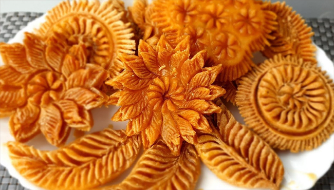
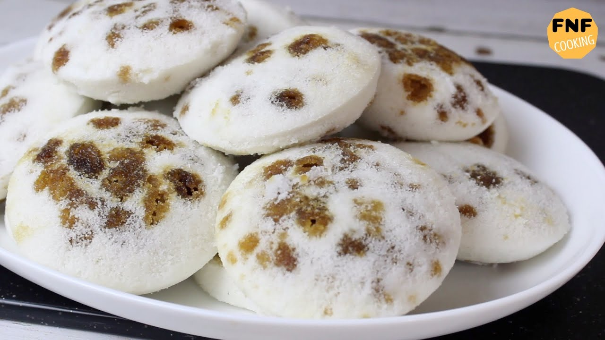

পিঠার দেশ বাংলাদেশ। পিঠা বাংলাদেশের একটি ঐতিহ্যবাহী খাবার। পৌষের হিমেল হাওয়া ছাড়া যেমন শীতকে কল্পনা করা যায় না, ঠিক তেমনি পিঠা ছাড়াও বাঙালির ঐতিহ্য চিন্তাই করা যায় না। তবে অঞ্চলভেদে ভিন্ন ভিন্ন পিঠা যেমন দেখা যায়, তেমনি একেকটি পিঠার বিভিন্ন নামও লক্ষ করা যায়।
নানান ধরনের পিঠাবিভিন্ন জেলায় এই পিঠাকে বিভিন্ন নামে ডাকা হলেও পাকন পিঠা বা নকশি পিঠা নামেই অধিক পরিচিত। চালের গুঁড়া এবং ডাল দিয়ে নকশি পিঠা তৈরি করা হয়। প্রথমে চালের গুঁড়া এবং ডালের সাথে পানি মিশিয়ে ডো তৈরি করা হয়। পরে বিভিন্ন নকশায় সাজিয়ে তেলে ভাজা হয়।
শীতের সকালে কাঁপতে কাঁপতে মায়ের ডাকে ঘুম থেকে উঠে গরম গরম ভাঁপা পিঠা খাওয়ার স্মৃতি কম বেশি সবারই আছে। ভাঁপে তৈরি করা হয় বলে একে ভাঁপা পিঠা বলা হয়। ভাঁপা পিঠা তৈরি করা খুবই সহজ।
